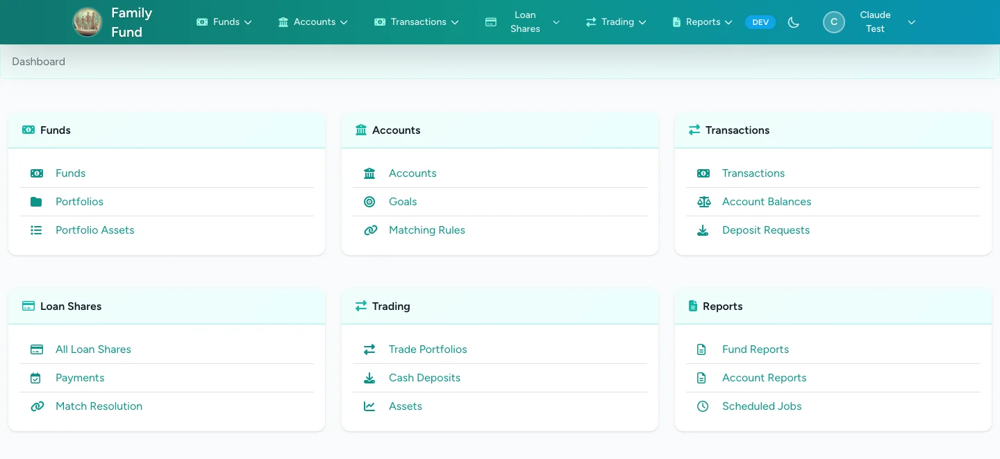
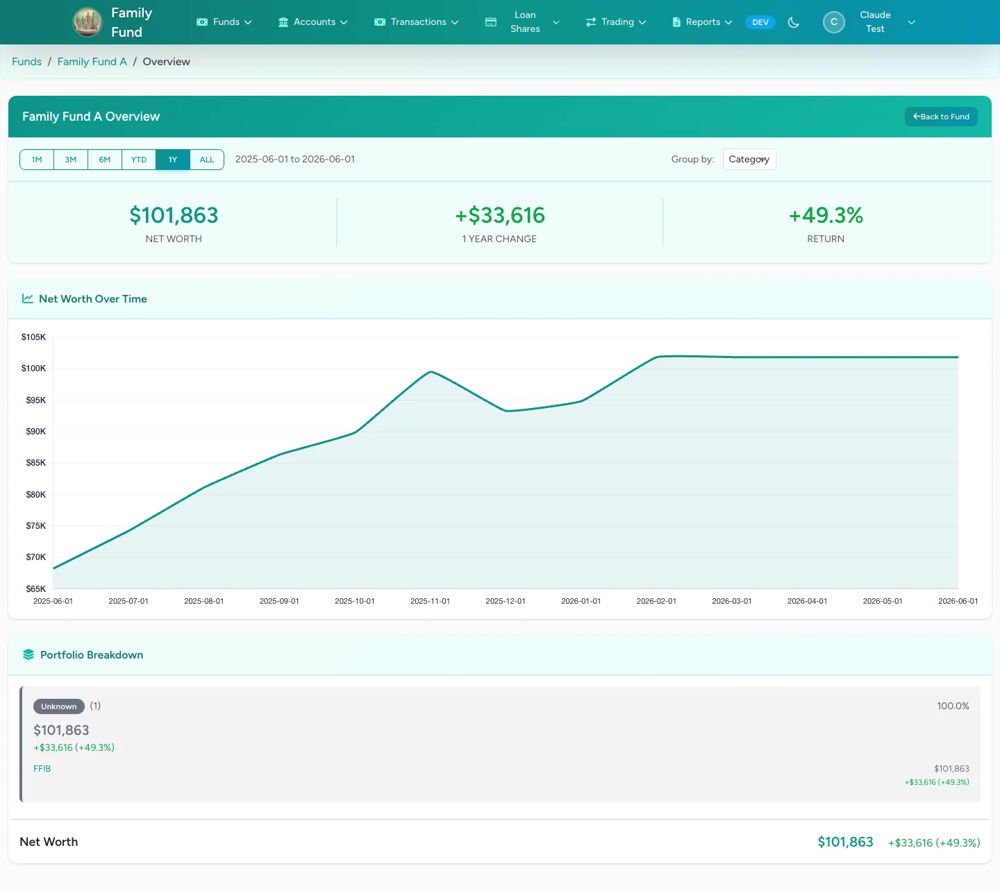
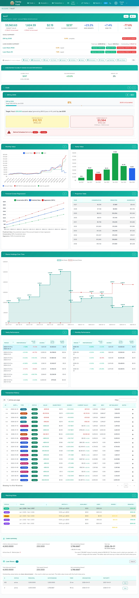

Funds & accounts
Model shared pools and individual accounts.
Laravel 12 · 2,200+ tests · live for 4 years
A self-hosted portfolio platform that tracks funds, accounts, holdings, and goals across a family — with share-based fund accounting, bitemporal history, multi-account funds, multi-tenant access control, automatic price/position feeds, and quarterly PDF reports. Built with Laravel 12, live for 4 years.
Real accounting for a household, not a spreadsheet.
Model shared pools and individual accounts.
A fund can hold multiple accounts — a consolidated net-worth view across institutions.
Assets with full historical pricing across portfolios.
A full ledger of every movement.
Track targets and forward-looking projections over time.
Automate contributions and allocations.
Internal lending — an account can borrow against its own balance, with a schedule and a payment simulator.
Family-member logins with isolated data — multi-tenant by design.
PDF statements generated and emailed automatically, with new graphs and forward-looking projections.
Imports Interactive Brokers Flex statements.
Built to manage a fund for the extended family — my siblings' kids and the next generation — aimed at long-horizon generational growth, with real accounting in place of spreadsheets. Live for 4 years; quarterly PDF statements are generated and emailed to family members automatically. The continuous, real operation is the credibility hook: it's not a demo.
Live dev environment, anonymized data — the real production system, just signed in as a test user.
The navigation hub — funds, accounts, transactions, share loans, trading, and reports.

Summary cards, net-worth-over-time chart, and portfolio breakdown.

Per-account view — summary, goal progress, value / shares / share-price charts, performance tables, and the full transaction history.

Narrated screen recordings over anonymized data — the real system, walked section by section.
One fund, section by section — highlights, the financial-independence goal, asset groups, value versus the S&P 500, forward projections, and the admin-only views.
One member's account — market value, goals, balances over time, performance, matching, and borrowing against shares.
Borrowing shares against your own balance — the create form, an active loan's progress and schedule, admin readjustment, the payment simulator, and the fund-level loan exposure rollup.
/as_of/{date} time-travel API.FamilyFund is one half of a two-app platform. DS Trader — a live, rules-based algorithmic trading engine — pushes positions and prices in via REST. End-to-end ownership across Java, PHP, Python, data modeling, API design, and operations.
{kind=link}
{kind=link}
{kind=link}